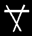

"Skaven"
By far the most common of all Skaven runes, three over-lapping lines forming an inverted triangle, simply means "Skaven", and is also used to signify the "S" sound. Its shape embodies the outline of both the Horned Rat and the Skaven face, and as such it represents the (so called) divine nature of all Skaven. See Skaven army book, page 5 (upper right).